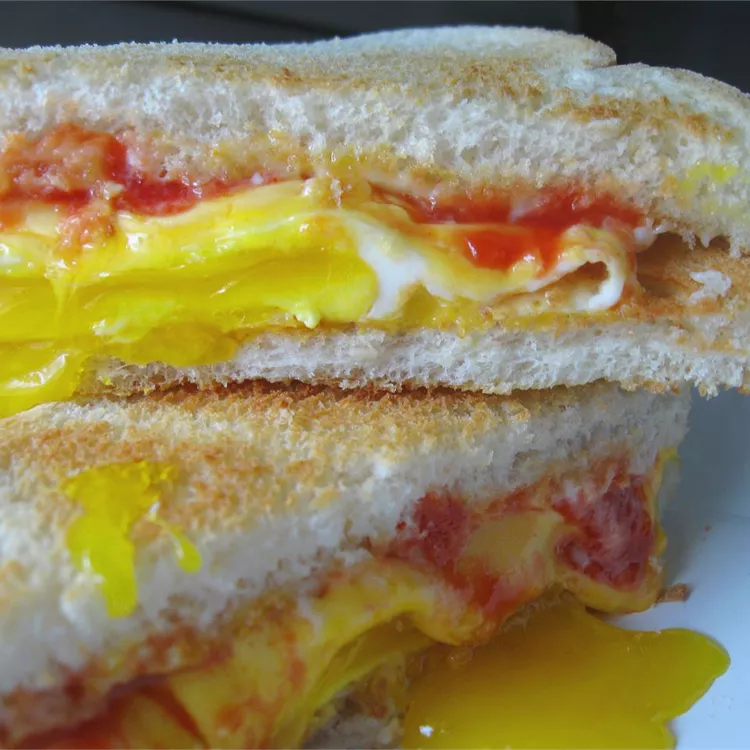

Fried Egg Sandwich

You're morning breakfast
This if your favorite breakfast meal all in between two slices of bread!
Ingredients
- 2 teaspoons of butter
- 4 large eggs
- 4 slices processed American cheese
- 8 slices toasted white bread
- salt and pepper to taste
- 2 tablespoons mayonnaise
- 2 tablespoons ketchup
Steps
- Melt butter over medium-high heat in a large skillet. Crack eggs into the pan and cook to desired firmness. Just before eggs are cooked, place a slice of cheese over each egg; continue to cook until cheese has melted.
- Transfer each egg to a toasted slice of bread. Season eggs with salt and pepper. Spread mayonnaise and ketchup on remaining slices of bread and cover eggs with bread to make 4 sandwiches. Serve warm.
Find this recipe on allrecipes.
Home Page